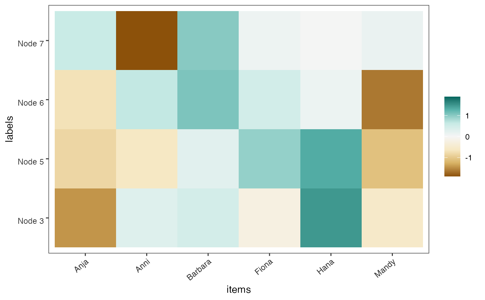
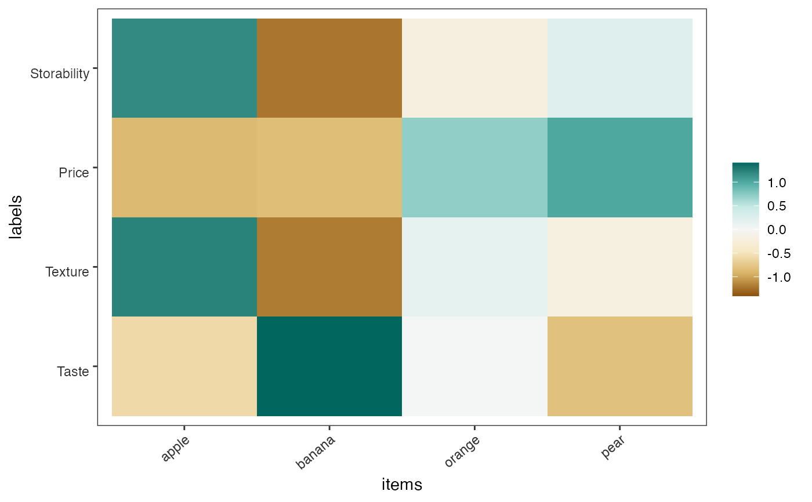

Produces plots to highlight worth coefficients of items in a party tree of a list of PlackettLuce models
worth_map(object, ...)
# S3 method for default
worth_map(object, ...)
# S3 method for list
worth_map(object, labels, ...)
worth_bar(object, ...)an object of class party or
an object of class PlackettLuce or
a list objects of class PlackettLuce
additional arguments passed to methods
a vector with the name of models in object
library("psychotree")
#> Loading required package: partykit
#> Loading required package: grid
#> Loading required package: libcoin
#> Loading required package: mvtnorm
#> Loading required package: psychotools
library("PlackettLuce")
data("Topmodel2007", package = "psychotree")
R = as.grouped_rankings(Topmodel2007$preference)
tm_tree = pltree(R ~ ., data = Topmodel2007[, -1],
minsize = 5,
npseudo = 0)
worth_map(tm_tree)

##########################################
# Ranking of preference on four fruits
# based on traits taste, texture,
# price and storability
# taste
R1 = matrix(c(1, 2, 3, 4,
4, 1, 3, 2,
4, 1, 2, 3,
1, 2, 0, 3), nrow = 4, byrow = TRUE)
colnames(R1) = c("apple", "banana", "orange", "pear")
mod1 = PlackettLuce(R1)
# texture
R2 = matrix(c(1, 4, 2, 3,
1, 4, 3, 2,
1, 4, 2, 3,
1, 4, 2, 3), nrow = 4, byrow = TRUE)
colnames(R2) = c("apple", "banana", "orange", "pear")
mod2 = PlackettLuce(R2)
# price
R3 = matrix(c(2, 4, 3, 1,
4, 1, 2, 3,
3, 4, 2, 1,
4, 3, 1, 2), nrow = 4, byrow = TRUE)
colnames(R3) = c("apple", "banana", "orange", "pear")
mod3 = PlackettLuce(R3)
# storability
R4 = matrix(c(1, 4, 3, 2,
3, 4, 1, 2,
1, 3, 2, 4,
2, 3, 4, 1), nrow = 4, byrow = TRUE)
colnames(R4) = c("apple", "banana", "orange", "pear")
mod4 = PlackettLuce(R4)
# models in a list
mods = list(mod1, mod2, mod3, mod4)
# name for each model
labels = c("Taste", "Texture", "Price", "Storability")
worth_map(mods, labels)

# plot only one model as bar
worth_bar(mod1)